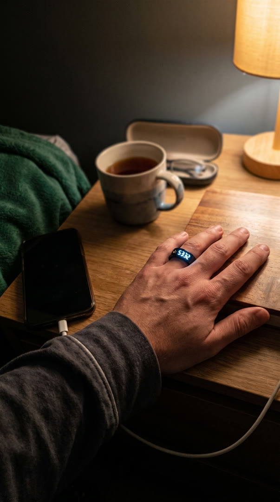
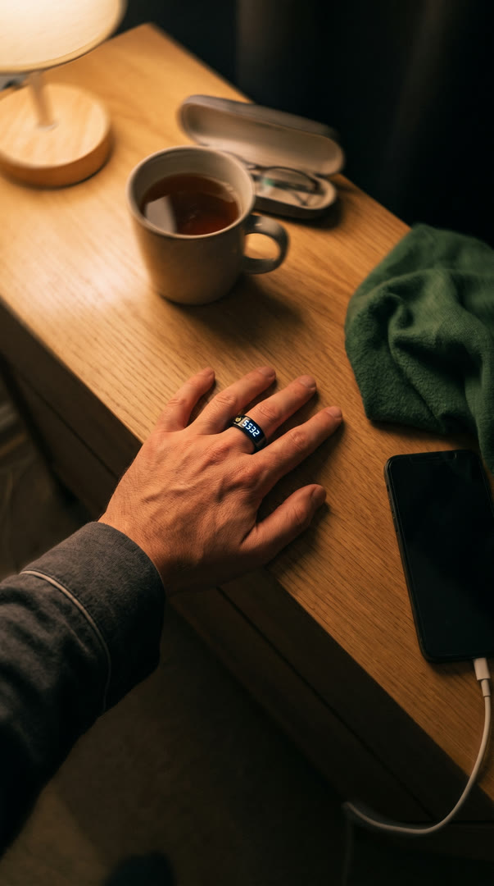
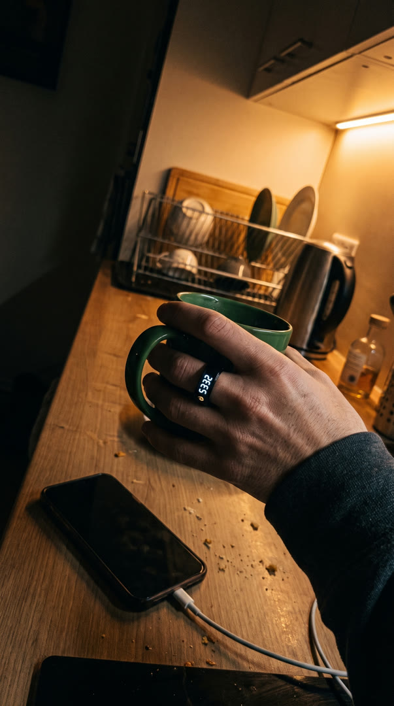

I did a big dhikr week. Then nothing.



Primary text
I did a big dhikr week. Then nothing.
Not because I stopped caring.
It was late. I was in bed. I wanted to say SubhanAllah a few more times.
I reached for my phone to open the counter. Next thing I knew I was deep in my feed, and the dhikr was gone.
Another night I used beads. A message came in. I lost my count.
I wondered if my intention was the weak part.
Then I read this. Narrated by Aisha: "the most beloved deed to Allah is the most regular and constant even if it were little." (Sahih al-Bukhari 6464)
Little. Not big once. Small, every day.
So it was never my intention. It was the friction: the phone, the beads, the lost count.
Al Rayan Dhikr Ring 2.0 puts the count on your finger. Tap to count. A gentle pulse at 33, 66 and 99. No phone to open.
Counting on fingers remains the Sunnah. The ring is a helper when the count gets long.
It is $49.99, with free US shipping and a 60-day money-back guarantee.
Tap Shop Now and try it.
Shop Now · 60-day money-back guarantee
Hooks recommended H1
- H1story-confessionI did a big dhikr week. Then nothing.
- H2problem-agitationI lost my count every single night.
- H3pattern-inversionYour dhikr was never weak. Your tools were.
- H4calloutIf your dhikr dies by Wednesday, read this.
- H5questionWhy does my dhikr stop after day three?
Swipe source
Yaqeen Books (GetHookd)
only tier A (70); 80 days optimized; confession + tiny-habit insight format
Faith citations used
- Narrated by Aisha: "the most beloved deed to Allah is the most regular and constant even if it were little." (Sahih al-Bukhari 6464)
Copy chief
2 round(s) · APPROVE